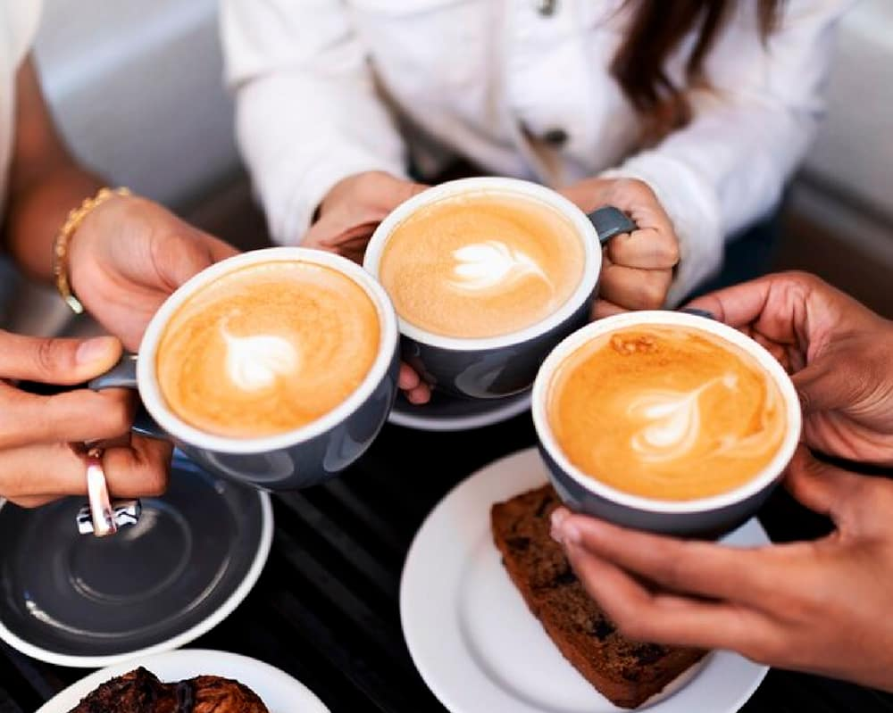
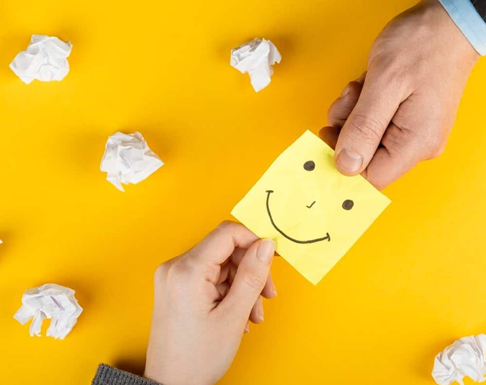

Saludos y despedidas con intención
Un simple “buenos días” o “que tengas una buena tarde” puede cambiar el tono de todo un día. Saludar y despedirse con amabilidad crea un ambiente más cálido y cercano.
Reconoce y agradece el esfuerzo
Todos queremos sentirnos valorados. Reconocer el trabajo de un compañero, ya sea en privado o en público, fomenta la confianza y la motivación.
Comparte momentos fuera del trabajo
Convivir fuera del contexto laboral ayuda a conocer a los demás en otro nivel. Esto fortalece las relaciones y genera un mejor entendimiento mutuo.
Escucha
activamente
A veces, tus compañeros solo necesitan alguien que los escuche. Mostrar interés y empatía por sus ideas, preocupaciones o incluso sus historias personales puede fortalecer enormemente los lazos.
Comparte tus recursos y conocimientos
El trabajo en equipo se fortalece cuando se ayuda de manera desinteresada. Si tienes un consejo, una herramienta útil o un truco que podría facilitar la tarea de un compañero, compártelo.
Celebra los logros del equipo
No esperes grandes eventos para reconocer los logros. Las pequeñas victorias también merecen celebrarse.
Sé amable con los detalles cotidianos
Pequeños actos, como sostener la puerta, ofrecer un café o dejar un mensaje positivo en un lugar visible, pueden mejorar el ambiente laboral.
Ofrece ayuda sin que te la pidan
Si ves a alguien abrumado o atareado, ofrecer tu apoyo puede hacer la diferencia.
Comparte algo positivo al final del día
Cierra la jornada con algo positivo. Resaltar algo bueno de ese día o reconocer un momento agradable ayuda a terminar con buen ánimo.
Sé un modelo de actitud positiva
La actitud es contagiosa. Mantener una disposición amable y abierta puede inspirar a otros a actuar de la misma forma.